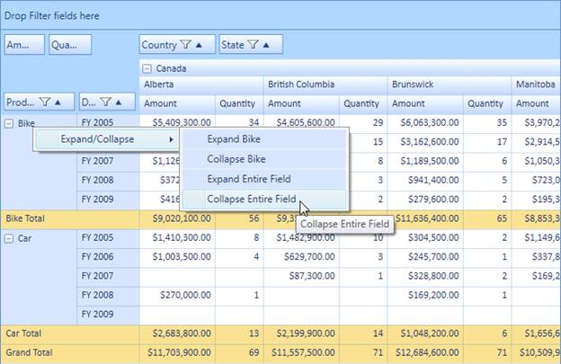

Expand/collapse operations can be done at both the UI and programmatic level. The context menu will be shown while right-clicking on the expander cell. Its skin will change with respect to the grid’s background color, and it is localizable too. Expand/collapse operations can be handled at the row level and column level individually. The header cell’s UniqueText will be shown as a ToolTip for each context menu item.
Use Case Scenarios
Enabling UI-level expand/collapse operations will allow the end user to expand and collapse the particular cell and entire row or column individually. Programmatically, they can expand/collapse any number of rows or columns.

Figure 46: Expand/Collapse via Context Menu